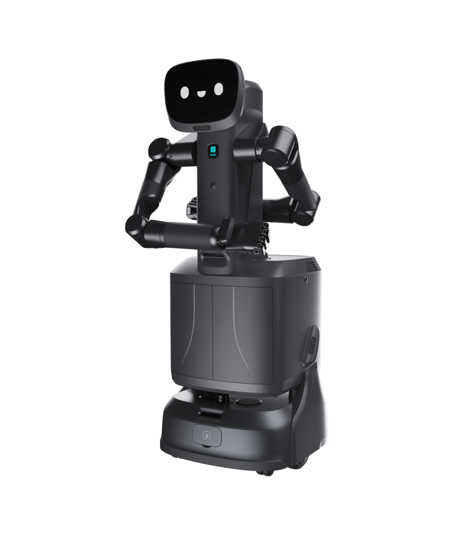

Semi-humanoid service robot · China · Strong signal · #28 R-Score rank
FlashBot Arm Robot Profile
Hospitality and building service delivery, elevator operation, access-card interaction, door opening, and assisted manipulation
Robot Snapshot
Core commercial and technical signals for FlashBot Arm.
FlashBot Arm facts
- Company
- Pudu Robotics →
- Status
- Product page / commercial path
- Use case
- Hospitality and building service delivery, elevator operation, access-card interaction, door opening, and assisted manipulation
- Height
- 1440 mm
- Runtime
- 8 hours unloaded
- Official source
- Open official source →
Robologai view
FlashBot Arm is tracked as a Semi-humanoid service robot robot for Hospitality and building service delivery, elevator operation, access-card interaction, door opening, and assisted manipulation. Robologai scores it by maturity, deployment signal, price clarity, media proof, and official source strength.
76/100 Strong signal
Maturity 3/5
Price clarity 1/5
Commercial 66
Mobility 86
AI signal 70
Strong signal
Readiness Breakdown
How Robologai scores FlashBot Arm across market-readiness signals.
Data Quality
Source confidence, pricing clarity, and deployment proof.
Source Notes
FlashBot Arm source trail.
Deployment Context
What FlashBot Arm signals about the physical AI market.
Compare Next